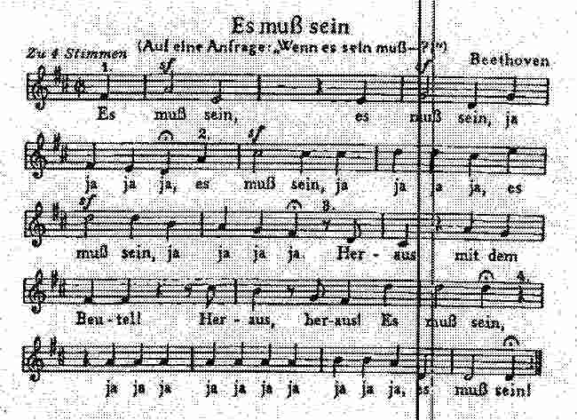

About me
I’m Yuenian Zhou (周越年), a Ph.D. candidate in mathematics and an associated member of SFB 1085 “Higher Invariants” at Universität Regensburg (Germany) since 2024, supervised by Prof. Moritz Kerz.
Previously, I completed my master’s studies at the Université Paris-Saclay (Paris-Sud) AAG (Analysis, Arithmetic, Geometry). Before that, I obtained my bachelor’s degree in mathematics at Zhejiang University in China.
Research interests
My research interests lie in algebraic geometry and number theory, centered on local systems, crystals, isocrystals, and their moduli stacks. I am especially interested in using moduli-theoretic methods to study rigidity and arithmetic phenomena in complex, p-adic, and ℓ-adic geometry, including ℓ-independence, the Fontaine–Mazur conjecture, and Simpson’s motivicity conjecture.
More broadly, I want to use moduli-theoretic and stack-theoretic methods to understand the geometric and arithmetic properties of local systems, crystals, and isocrystals, including their deformation theory, rigidity, and behavior over mixed-characteristic local fields.
